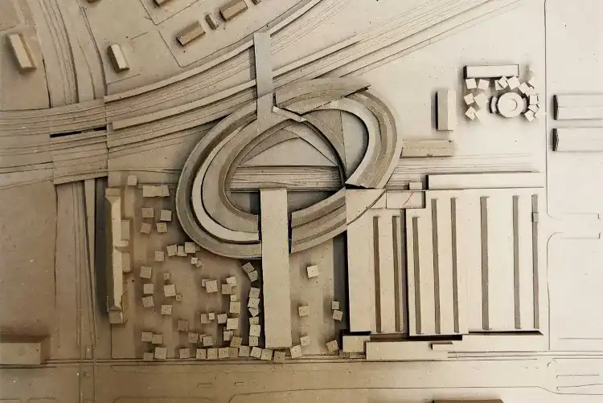

Musée Hongrois Transport
À Budapest, le Musée Hongrois des Transports, ou Közlekedési Múzeum en hongrois, est une institution captivante qui met en valeur l'histoire et l'évolution des transports en Hongrie. Voici une brève présentation de son architecture : Conception Architecturale : Le Musée Hongrois des Transports est logé dans un bâtiment historique du début du XXe siècle qui ajoute une atmosphère distincte à l'expérience muséale. Son architecture extérieure reflète une combinaison de styles, avec des éléments néoclassiques et Art nouveau qui donnent au musée une présence visuelle unique. Les Expositions Extérieures : En plus de son bâtiment principal, le musée dispose d'une vaste zone extérieure qui expose divers moyens de transport, des locomotives aux avions. Cette configuration extérieure crée une atmosphère immersive, permettant aux visiteurs de voir et même d'explorer certains des véhicules historiques.
L'Expansion Moderne : Le musée a subi des rénovations et des expansions au fil des ans pour répondre aux besoins d'une collection en constante croissance. Les ajouts modernes ont été intégrés de manière harmonieuse, créant une fusion intéressante entre l'ancien et le nouveau. L'Expérience Intérieure : À l'intérieur, l'architecture du musée offre un espace adapté à la présentation d'une variété impressionnante d'objets liés aux transports. Les espaces d'exposition sont conçus de manière à guider les visiteurs à travers les différentes époques du transport hongrois, offrant une expérience chronologique et thématique. Le Caractère Éducatif : L'architecture du Musée Hongrois des Transports est également pensée pour faciliter l'éducation. Des salles interactives, des simulateurs et des installations multimédias offrent aux visiteurs une expérience d'apprentissage immersive et divertissante.
Engagement Envers le Futur : En tant que gardien de l'histoire des transports, le musée reconnaît également l'importance de l'innovation et de l'avenir. Des sections dédiées à la technologie moderne et aux développements futurs dans les transports permettent au musée de rester pertinent et attractif pour les visiteurs de tous âges. En conclusion, le Musée Hongrois des Transports, par son architecture combinant l'ancien et le moderne, crée un cadre fascinant pour explorer l'histoire et l'évolution des moyens de transport en Hongrie. Il offre une expérience éducative et immersive, tout en célébrant l'héritage riche et dynamique de la mobilité.